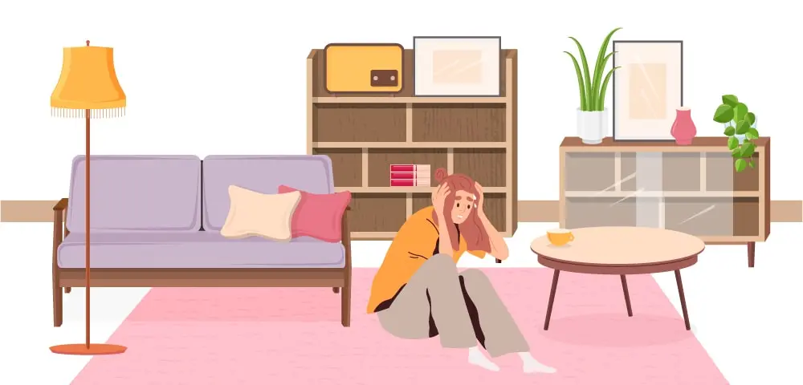

Defining Agoraphobia
Agoraphobia is a type of anxiety disorder. It is a fear of being in situations where it might be difficult to leave. A fear that help is not there if bad things were to happen. Agoraphobia is more than just a fear of open spaces. It can be triggered by crowds, being alone or in a confined space. Agoraphobia and panic go hand in hand.

How common is Agoraphobia?
2 in every 100 people will likely get Agoraphobia at some point in their lives. It is more common in older people and in women. It is a common mental health condition. Your family doctor will have experience helping people with this condition. Given how common it is, there are many online support groups.
What other anxiety conditions co-occur with Agoraphobia?
- Panic Disorder
- Social Anxiety Disorder
- Phobias
- PTSD
Firstly panic disorder is often seen with agoraphobia. People with this condition can get a panic attack just thinking about going out of their safe space. Secondly, because they are not meeting new people, they feel anxious in social settings. In addition, depression and drug use can happen. Often as a way of coping.
What are the symptoms of Agoraphobia?
How agoraphobia is experienced, how bad it gets and how it impacts the quality of life differs from person to person.
Physical symptoms
Oftentimes people with agoraphobia avoid their triggers. Therefore they rarely get the signs of agoraphobia. Physical symptoms of agoraphobia are similar to a panic attack and can include:
- Increased heart rate and show shallow breaths
- Nausea, chest pain and feeling sweaty
- Dizziness and feeling faint
Behavioural signs and symptoms
Being stuck at home or avoiding being too far away from home are some of the limiting behaviours of agoraphobia. Also having someone you feel comfortable with or avoiding being in public altogether. In addition, doing your shopping online, exercising indoors or relying on others and sometimes even children to do tasks.
Thinking styles associated with Agoraphobia
There are certain thinking styles or ways of seeing the world that is associated with agoraphobia.
A view that having a panic attack may make you look silly in front of others. Secondly, that a panic attack could mean death. Fear of embarrassment around losing control or losing your sanity in front of others.Concerns that others are looking at you or noticing physical signs of your anxiety. For instance, sweating or shaking.
Agoraphobia may also tie into views that the world is unsafe. Finally, self-views of not being good enough or not being capable.
What triggers and brings out Agoraphobia?
Often times Agoraphobia is the result or complication of repeated panic attacks. Fear builds up regarding places or situations panic attacks have happened before.
Sometimes living in a dangerous environment for instance in the midst of war or terrorism; we might be afraid to go out in public. A history of personal violence or illness may also make us fearful of being away from a place of safety.
Researchers have speculated whether agoraphobia may be due to poor spatial awareness; the layout of shopping malls being unfamiliar and very different from what people are used to. Also, large crowds of people in a tight small space is unusual.
Age of onset
Is there a specific age?
Compared to other anxiety disorders in particular phobias and separation anxiety disorder, agoraphobia tends to appear at an older age. The 20s to mid-30s appears to be the peak age of onset. It is a chronic condition, with the intensity of symptoms fluctuating over time.
Impact of Agoraphobia
The personal, social and community cost of Agoraphobia is immense. The loss of potential and disability is palpable in meeting young people with agoraphobia. Careers, family lives and education is impacted when people are afraid to leave their homes
Assessment for Agoraphobia
Psychologists and doctors often start by asking about details of panic and avoidance behaviours. They will want to know when problems first started and how it has changed over time. It is important for clinicians to know what has worked in the past and the coping strategies used.
What Agoraphobia stops a person from doing. Also, understanding the person in terms of their family, community and wider societal culture is important. Agoraphobia like all anxiety disorders is linked with certain thoughts. “The world is unsafe”, “I’m not worthy. a fraud” are some thoughts that lead to people isolating themselves at home.
Your doctor might also want to do blood tests. It is not unusual for thyroid and checks for an irregular heartbeat to be done. It is important to know that medical symptoms and agoraphobia can occur together. Especially for new-onset or unusual cases of agoraphobia, it may be worth checking for any medical problems that are also occurring.
How to get help?
Once it is identified that agoraphobia is driven by fears and worry; a psychologist or psychiatrist is well suited to complete a thorough mental health assessment. They may want to explore avoidant or dependent personality styles, past traumas or poor attachment patterns. Secondly, they will want to know how you cope, anyways other people enable agoraphobia. In addition, questions about past treatments, what has worked and what has not. Finally, what the goals of treatment are.
Treatment for Agoraphobia
The structure of treatment programs for agoraphobia is similar to that of other anxiety disorders. Firstly, psychoeducation or learning about Agoraphobia. Secondly, self-help techniques, psychology, lifestyle changes and supports are the good frameworks around which to build a treatment plan. Finally, medication can be considered.
Learning about Agoraphobia
Firstly there are increasing amounts of high-quality educational material online about Agoraphobia. There is different audio, video and written content out there. In addition, therapists usually start treatment with an explanation of symptoms. Understanding allows for better engagement with therapy, ask questions and learning recommendations from your therapist.
Speaking with other people who face similar problems helps. Often it is these personal stories, insights that help the most. Also, agoraphobia is a lonely way to live. Connecting and sharing with others can help.
Self-help strategies
We will mention 4 self-help strategies below. It helps to be creative. Especially when tackling anxiety conditions. Agoraphobias as we wrote above is an anxiety condition.
- Slow down – People want to run and hide when they feel anxious. Instead, try to stay in the same place. If you are in an elevator, car or bus when it stops get down. Then slowly move to somewhere out of harm’s way.
- Mental pictures or using our imagination is a great way to challenge agoraphobia. For instance, picturing leaving home, stepping into a crowded space can form an exposure practice. Next, take some slow deep breaths. In addition, mental images can also help in a reverse instance when agoraphobia is triggered. For instance, thinking of a safe calm space during a panic attack can lessen arousal.
- Not fighting panic symptoms triggered by agoraphobia. Instead, focus on something else, distraction can help calm the body down. If feeling anxious in public, call a friend on your phone. Thereafter, watch a calming video on your phone.
- Internet-based apps or self-help books on agoraphobia. There are more and more apps to help people with anxiety. Similarly, self-help books on anxiety are a great tool.
Psychological strategies
There is a strong evidence base for talking therapies; they have some of the highest success rate and lowest dropout rates of all treatment options. Therapy works by stopping unhelpful thoughts. Firstly, some people with agoraphobia worry that if they have a panic attack outside the home. That they will die or not cope. Psychologists help replace those thoughts with more positive ways of thinking. Behavioural therapy plays an important role. Initially with agoraphobia therapists coach getting to the corner shop. Gradually as confidence builds, the next challenge can be getting to a supermarket and finally a mall.
Positive self-talk can also help. Be kind, caring and easy when you speak to yourself. We have a short youtube video on positive self-talk. Visit our channel’s page to learn more. There are also free online worksheets on positive self-talk.
Medications
The evidence to support the use of tablets in treating agoraphobia is limited. Selective serotonin reuptake inhibitors (SSRI) and tricyclic antidepressants (TCA) have limited and somewhat conflicting findings when used. There is a lack of scientific findings supporting their use long term. It is important to remain aware of antidepressants adverse and withdrawal effects.
Benzodiazepines are sometimes prescribed shorter terms. However, they too have side effects. Outcomes are best when used along with therapy.
Lifestyle factors
- Avoid stimulants. Smoking nicotine, drinking coffee or sugar-rich drinks might worsen anxiety.
- Regular exercise can reduce muscle tension, force people to go outside and increase self-confidence. Invariable people with agoraphobia have low self-esteem. For instance, walking up and down the street is a great place to start.
- Long term use of alcohol can perpetuate negative self-views and get in the way of recovery.
Supports
Informal supports are equally and if not more important than professional supports. Ideally friends and family should be aware of the anxiety and supportive in recovery. It helps to have a person you trust. A support person can take you the first time. Help you build your confidence. Following this, you may be able to do the task alone.
Support can also come in the form of a pet. Talking your dog outside for a walk. Being outside with a trusted pet may be enough to drop down the anxiety. Plus its good exercise for you and the dog. Comfort animals are more and more been seen as a help for people anxious about being outside.
There are also online support groups; Australia based and overseas. People with agoraphobia feel alone, support groups challenge that view. A healthy support group provides tips, advice, provide emotional support and motivation. A quick search online can help find support groups.
At Epsychiatry we have clients with agoraphobia. In fact, people with agoraphobia often turn to online therapists to get their lives back on track. Send our friendly support team an email. Secondly, you can reach us by web inquiry or a phone call to learn more about how we can help. You will need a letter from your GP to see one of our doctors or psychologists.